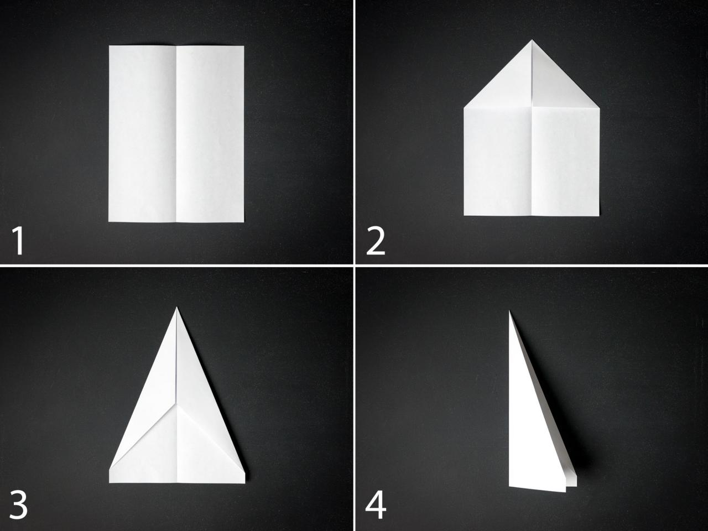
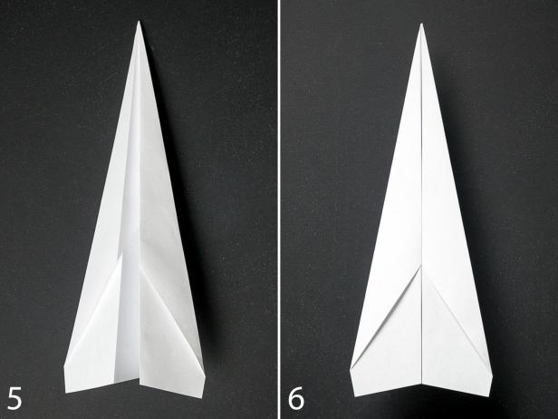

Origami
paper airoplanes:
The DART
to make this follow the given step:


- Fold the paper in half vertically.
- Unfold the paper and fold each of the top corners into the center line.
- Fold the top edges into the center line.
- Fold the plane in half toward you.
- Fold the wings down, matching the top edges up with the bottom edge of the body.
- Add double stick tape to the inside of the body. The finished plane should look like this.